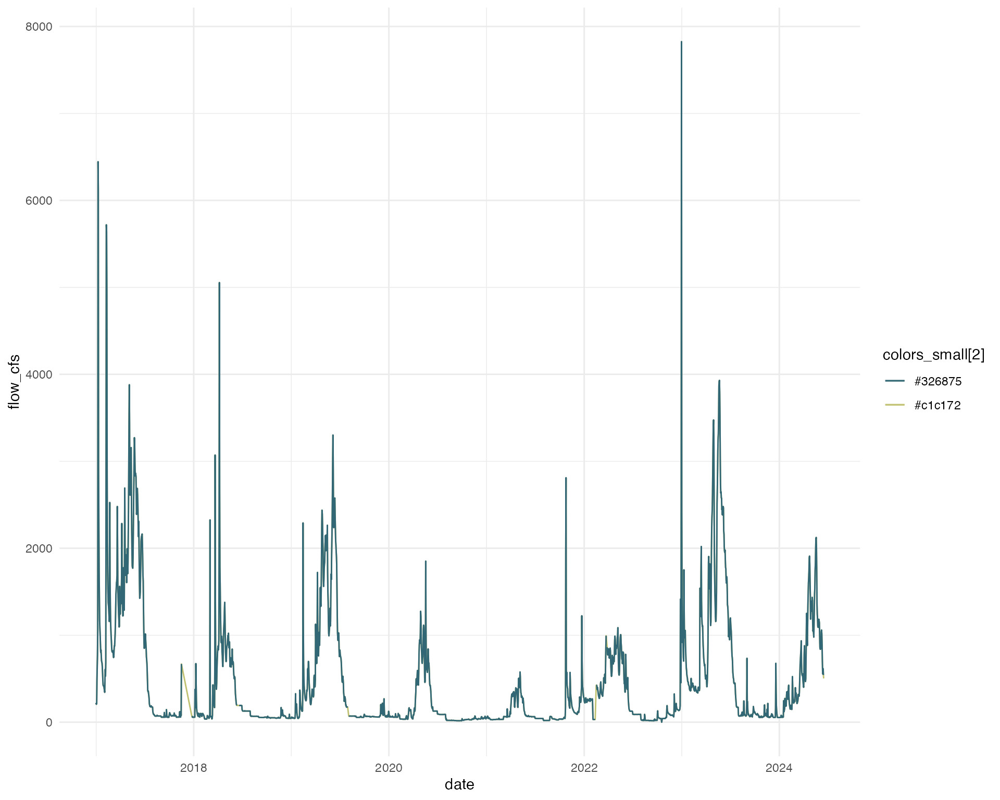
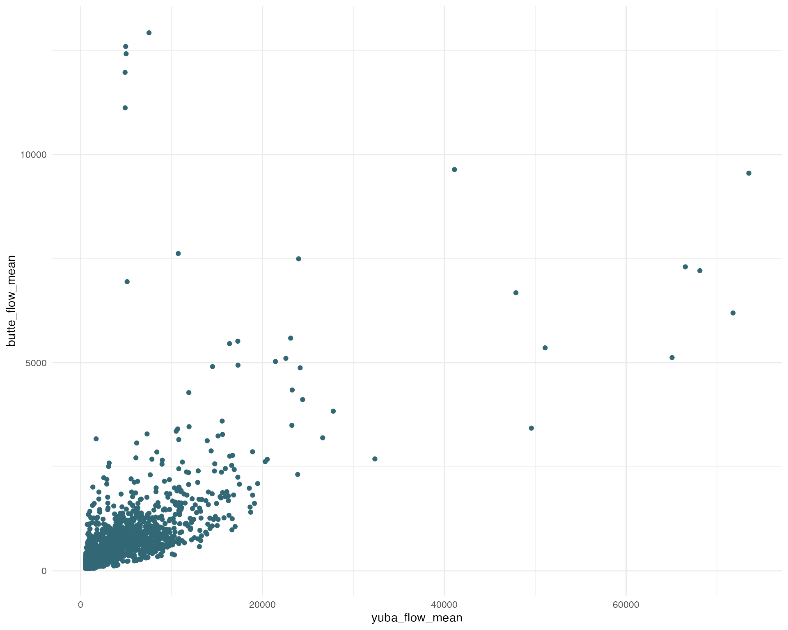
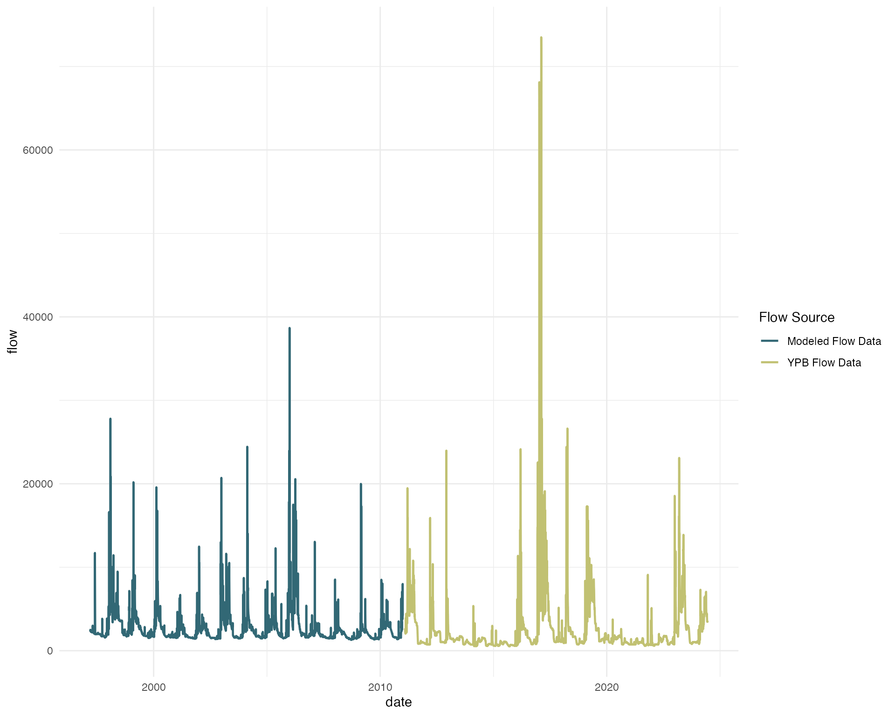
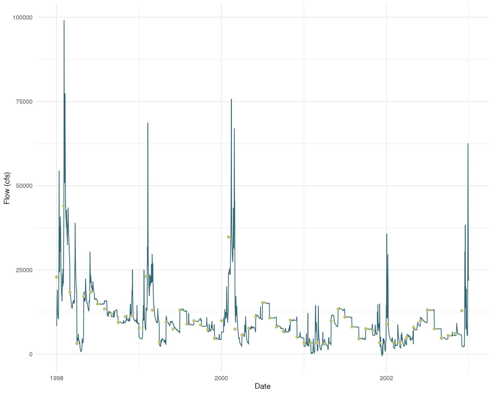

flow_modeling_approaches.RmdFlow data modeling is crucial for various applications in hydrology, water resource management, and environmental studies. In cases where empirical data for a stream is lacking, several approaches can be employed to generate flow estimates. In this document, we explore various quick methods for modeling flow data when empirical data is unavailable.
This package also develops more in depth modeling to produce daily flow data for a watershed. Please refer to alternative article for an overview of that modeling.
Benefit: Quick and easy, performs relatively well for flow data that follows seasonal patterns. Good for data that is fairly complete with some shorter gaps.
Limitation: May miss abnormal extreme flow events, may have more uncertainty than other approaches
Using a timeserries interpolation function is a good approach if you
have relatively good data coverage but have a few data gaps. One
possible interpolation function is the
forecastML::fill_gaps(). For more information about this
function, see the forecastML
documenation.
I want to study the flow and temperature correlation on the American
river system. There is a CDEC gage on my system, but it is missing data
for for a few month long chunks throughout the timeseries. I use the
forecast forecast::na.interp() function to fill in these
data gaps.
# Load necessary libraries
library(dataRetrieval)
library(forecastML)
library(forecast)
library(padr)
# Make API call to CDEC to retrieve flow data for the specified site and time period
amk <- cdec_query(station = "AMK", dur_code = "H", sensor_num = "20", start_date = "2017-01-01") |>
mutate(date = as_date(datetime)) |>
group_by(date) |>
summarise(flow_cfs = mean(parameter_value, na.rm = TRUE)) |>
mutate(data_type = "gage") |>
pad() # pads so not missing dates
#create a timeseries that covers all dates of date period
amk_approx <- amk |>
mutate(old_flow = flow_cfs,
flow_cfs = forecast::na.interp(amk$flow_cfs),
data_type = ifelse(data_type == "gage", data_type, "aproximated")) |>
pad()
# plot
amk_approx |>
ggplot(aes(x = date, y = flow_cfs, color = colors_small[2])) +
geom_line() +
geom_line(aes(x = date, y = old_flow, color = colors_small[1])) +
scale_color_manual(values = colors_small) +
theme_minimal()
Benefit: Fairly quick and straightforward, linear regression typically does a fairly good job
Limitation: Need at least some gage overlap across different conditions, if you do not have good coverage across different conditions you may loose some of the extreme flow events
One approach is to interpolate flow data for one stream using available stream gage data. In order to do this you need at least some gage data on the system you are trying to model and this data should cover a variety of conditions (water year types). This method establishes a linear correlation between the target site and other sites that experience similar hydrological conditions. The approach requires identifying comparable sites and establishing a relationship between their flow data.
I am creating a regional model with data from 4 salmonid bearing streams: Butte Creek, Mill Creek, Deer Creek, and Yuba River . I am interested in flow data from 2000 - 2024 to match with my monitoring data. Unfortunately, on Yuba River, there is only gage data after 2010. In order to keep Yuba in my dataset. I need to fill in the gaps.
## Data used to build models: Butte Creek
# Butte Creek is used to build the regression models because the time series is complete and the data are high quality.
# data range 1997-03-12 to 2024-03-20
cdec_datasets("BCK")## # A tibble: 9 × 6
## sensor_number sensor_name sensor_units duration start end
## <int> <chr> <chr> <chr> <date> <date>
## 1 1 river stage feet event 1997-03-12 2024-06-14
## 2 1 river stage feet hourly 1997-03-14 2024-06-14
## 3 14 battery voltage volts hourly 1997-03-14 2019-04-15
## 4 20 flow river discharge cfs event 1997-03-12 2024-06-14
## 5 20 flow river discharge cfs hourly 1997-03-14 2024-06-14
## 6 25 temperature water deg f event 2017-06-06 2024-06-14
## 7 25 temperature water deg f hourly 1998-09-16 2024-06-14
## 8 27 water turbidity ntu hourly 1999-10-18 2005-01-01
## 9 41 flow mean daily cfs daily 1999-07-21 2024-06-14
butte <- cdec_query(station = "BCK", dur_code = "H", sensor_num = "20", start_date = "1997-01-01")
butte_format <- butte |>
mutate(date = as_date(datetime),
flow = parameter_value) |>
filter(parameter_value > 0) |>
group_by(date) |>
summarise(mean = mean(parameter_value, na.rm = TRUE),
max = max(parameter_value, na.rm = TRUE),
min = min(parameter_value, na.rm = TRUE)) |>
pivot_longer(mean:min, names_to = "statistic", values_to = "value") |>
mutate(stream = "butte creek",
gage_agency = "CDEC",
gage_number = "BCK",
parameter = "flow")
butte_format_wide <- butte_format |>
ungroup() |>
select(-gage_agency, -gage_number) |>
pivot_wider(id_cols = c(stream, date), names_from = "statistic", values_from = "value", values_fill = NA)
# Timeserries will be modeled to match dates from BCK (1997-2024)
# Gage Data
YR7_daily_flows <- cdec_query(station = "YPB", dur_code = "H", sensor_num = "20", start_date = "2009-01-01")
yuba_format <- YR7_daily_flows |>
mutate(date = as_date(datetime),
year = year(datetime)) |>
filter(parameter_value > 0, !is.na(date)) |>
group_by(date) |>
summarise(mean = mean(parameter_value, na.rm = TRUE),
max = max(parameter_value, na.rm = TRUE),
min = min(parameter_value, na.rm = TRUE)) |>
pivot_longer(mean:min, names_to = "statistic", values_to = "value") |>
mutate(stream = "yuba river",
gage_agency = "CDEC",
gage_number = "YPB",
parameter = "flow")
# Generate a sequence of dates from 2010-10-01 to 2024-03-20
all_dates <- seq(as.Date("2010-10-01"), as.Date("2024-03-20"), by = "day")
# Check for missing dates in YPB
missing_dates <- setdiff(all_dates, yuba_format$date)
missing_dates <- as.Date(missing_dates, origin = "2010-10-01")
# Print the missing dates, if any
if (length(missing_dates) == 0) {
print("No missing dates found.")
} else {
print("Missing dates:")
print(missing_dates)
}## [1] "Missing dates:"
## [1] "2051-07-01" "2051-07-02" "2051-07-03" "2051-07-04" "2051-07-05"
## [6] "2051-07-06" "2051-07-07" "2051-07-08" "2051-07-09" "2051-07-10"
## [11] "2051-07-11" "2051-07-12" "2051-07-13" "2051-07-14" "2051-07-15"
## [16] "2051-07-16" "2051-07-17" "2051-07-18" "2051-07-19" "2051-07-20"
## [21] "2051-07-21" "2051-07-22" "2051-07-23" "2051-07-24" "2051-07-25"
## [26] "2051-07-26" "2051-07-27" "2051-07-28" "2051-07-29" "2051-07-30"
## [31] "2051-07-31" "2051-08-01" "2051-08-02" "2051-08-03" "2051-08-04"
## [36] "2051-08-05" "2051-08-06" "2051-08-07" "2051-08-08" "2051-08-09"
## [41] "2051-08-10" "2051-08-11" "2051-08-12" "2051-08-13" "2051-08-14"
## [46] "2051-08-15" "2051-08-16" "2051-08-17" "2051-08-18" "2051-08-19"
## [51] "2051-08-20" "2051-08-21" "2051-08-22" "2051-08-23" "2051-08-24"
## [56] "2051-08-25" "2051-08-26" "2051-08-27" "2051-08-28" "2051-08-29"
## [61] "2051-08-30" "2051-08-31" "2051-09-01" "2051-09-02" "2051-09-03"
## [66] "2051-09-04" "2051-09-05" "2051-09-06" "2051-09-07" "2051-09-08"
## [71] "2051-09-09" "2051-09-10" "2051-09-11" "2051-09-12" "2051-09-13"
## [76] "2051-09-14" "2051-09-15" "2051-09-16" "2051-09-17" "2051-09-18"
## [81] "2051-09-19" "2051-09-20" "2051-09-21" "2051-09-22" "2051-09-23"
## [86] "2051-09-24" "2051-09-25" "2051-09-26" "2051-09-27" "2051-09-28"
## [91] "2051-09-29" "2051-09-30" "2051-10-01" "2051-10-02" "2051-10-03"
## [96] "2051-10-04" "2051-10-05" "2051-10-06" "2051-10-07" "2051-10-08"
## [101] "2051-10-09" "2051-10-10" "2051-10-11" "2051-10-12" "2051-10-13"
## [106] "2051-10-14" "2051-10-15" "2051-10-16" "2051-10-17" "2051-10-18"
## [111] "2051-10-19" "2051-10-20" "2051-10-21" "2051-10-22" "2051-10-23"
## [116] "2051-10-24" "2051-10-25" "2051-10-26" "2051-10-27" "2051-10-28"
## [121] "2051-10-29" "2051-10-30" "2054-01-06" "2054-01-07" "2054-01-08"
## [126] "2054-01-09" "2054-01-10" "2054-01-11" "2054-01-12" "2054-01-13"
## [131] "2054-01-14" "2054-01-15" "2054-01-16" "2054-01-17" "2054-01-18"
## [136] "2054-01-19" "2054-01-20" "2054-01-21" "2054-01-22" "2054-01-23"
## [141] "2054-01-24" "2054-01-25" "2054-01-26" "2054-01-27" "2054-01-28"
## [146] "2054-01-29" "2054-01-30" "2054-01-31" "2054-02-01" "2054-02-02"
## [151] "2054-02-03" "2054-02-04" "2054-02-05" "2054-02-06" "2054-02-07"
## [156] "2054-02-08" "2054-02-09" "2054-02-10" "2054-02-11" "2054-02-12"
## [161] "2054-02-13" "2054-02-14" "2054-02-15" "2054-02-16" "2054-02-17"
## [166] "2054-02-18" "2054-02-19" "2054-02-20" "2054-07-31" "2054-08-01"
## [171] "2054-08-02" "2054-08-03" "2054-08-04" "2057-07-15" "2057-07-16"
## [176] "2057-07-17" "2057-07-18" "2057-09-30" "2057-10-01" "2057-10-02"
## [181] "2057-11-30" "2057-12-01" "2057-12-02" "2057-12-03" "2060-05-16"
## [186] "2062-04-15" "2062-04-16" "2062-04-21" "2062-07-24" "2062-08-06"
## [191] "2062-09-05" "2062-09-11" "2062-09-12" "2062-09-15" "2062-09-22"
## [196] "2062-09-24" "2062-09-25" "2062-09-28" "2062-10-04" "2063-08-05"
## [201] "2063-08-06" "2063-08-21" "2063-08-26" "2063-08-27" "2063-10-16"
## [206] "2063-11-11" "2063-11-12" "2064-08-22" "2064-10-05" "2064-10-10"
## [211] "2064-10-11" "2064-10-12" "2064-10-13" "2064-10-14" "2064-10-15"
## [216] "2064-10-16"
# combine butte and yuba together for regression modeling
yuba_format_wide <- yuba_format |>
ungroup() |>
select(-gage_agency, -gage_number) |>
pivot_wider(id_cols = c(stream, date), names_from = "statistic", values_from = "value", values_fill = NA) |>
filter(!is.na(date))
yuba_regression_data_full <- yuba_format_wide |>
ungroup() |>
select(date, mean) |>
rename(yuba_flow_mean = mean) |>
full_join(butte_format_wide |>
select(date, mean) |>
rename(butte_flow_mean = mean))
# Plotting butte and yuba flow correlation
ggplot(yuba_regression_data_full, aes(x = yuba_flow_mean, y = butte_flow_mean)) +
geom_point(color = colors[1]) +
theme_minimal()
# FOR PREDICTIONS identify gaps to predict data
yuba_gap_mean <- yuba_regression_data_full |>
filter(is.na(yuba_flow_mean), !is.na(butte_flow_mean)) |>
rename(butte_flow = butte_flow_mean)
# FOR MODEL use data where there are no missing data for either butte or feather for regression modeling
yuba_regression_data_mean <- yuba_regression_data_full |>
filter(!is.na(yuba_flow_mean), !is.na(butte_flow_mean)) |>
rename(butte_flow = butte_flow_mean,
flow = yuba_flow_mean)
#### Building Mean Regression
# MEAN Regression
split <-rsample::initial_split(yuba_regression_data_mean, prop = 0.8)
train <- rsample::training(split)
test <- rsample::testing(split)
yuba_mod_mean <- lm(flow ~ date + butte_flow, data = train)
summary(yuba_mod_mean)##
## Call:
## lm(formula = flow ~ date + butte_flow, data = train)
##
## Residuals:
## Min 1Q Median 3Q Max
## -41342 -776 -443 209 45299
##
## Coefficients:
## Estimate Std. Error t value Pr(>|t|)
## (Intercept) 1.174e+03 5.381e+02 2.181 0.0293 *
## date -4.833e-03 3.070e-02 -0.157 0.8749
## butte_flow 3.643e+00 6.549e-02 55.629 <2e-16 ***
## ---
## Signif. codes: 0 '***' 0.001 '**' 0.01 '*' 0.05 '.' 0.1 ' ' 1
##
## Residual standard error: 2657 on 3821 degrees of freedom
## Multiple R-squared: 0.4475, Adjusted R-squared: 0.4472
## F-statistic: 1548 on 2 and 3821 DF, p-value: < 2.2e-16
test_predict <- predict(yuba_mod_mean, test)
test_predict_df <- test |>
mutate(predicted = test_predict)
# evaluate predictions - MAPE of 10% is not bad
mean(abs((
test_predict_df$predicted - test_predict_df$flow
)) / test_predict_df$flow)## [1] 0.6541242
# Predictions
yuba_gap_predicted_mean <- predict(yuba_mod_mean, yuba_gap_mean)
yuba_mean_predicted <- yuba_gap_mean |>
mutate(value = yuba_gap_predicted_mean,
statistic = "mean_predicted") |>
filter(!is.na(date)) |>
select(date, value, statistic)
#joining predictions to Yuba data
#filling missing values in yuba_format_wide with values from yuba_mean_predicted
merged_data <- full_join(yuba_format_wide, yuba_mean_predicted, by = "date")
# mutating predicted and existing flow values into a single column
flow_modeled <- merged_data |>
mutate(flow = ifelse(is.na(mean), value, mean),
source = ifelse(is.na(statistic), "YPB", statistic)) |>
select(c(stream, date, flow, source)) |>
filter(!(year(date) > 2010 & source != "YPB"))
# plotting flow data showing modeled and existing flow data
ggplot(flow_modeled, aes(date, flow, color = source)) +
geom_line(size = .8) +
scale_color_manual(values = c(colors_small[1], colors_small[2]),
labels = c("Modeled Flow Data", "YPB Flow Data")) +
labs(color = "Flow Source") +
theme_minimal()
Benefit: CalSim or SACWAM already modeled it for you, no need to repeat the process
Limitation: Montly flow granualarity may be limiting for your use case
Existing modeled flow data from sources like Calsim or SACWAM can be utilized. Typically these modeled sources have already used an approach to fill data gaps. These models simulate hydrological processes and provide flow outputs, which can be directly used across the system. However, these modeled datasets are only available at a monthly timestep, additional modeling may be needed to produce finer scale flow data.
Benefit: Provides daily timstep data
Limitation: Uncertainty in daily flows, lots of different timeserries could produce the same monthly mean flow, daily predictions are smothed version of what an actual daily flow timeserries may look like
If existing modeled flow data is available but lacks the required resolution, we can expand it to provide daily flow values.
I want to use Valley wide data to understand flow survival
relationships of Chinook Salmon. I plan to use CalSim data but need my
flow data to have a daily timestep, CalSim data is at a monthly
timestep. First, I pull in some CalSim monthly flow data from DSMflow.
DSMflow::flow_cfs and I select the Upper Sacramento
River
# Load in packages
library(tsbox)
library(tempdisagg)
# remotes::install_github("CVPIA-OSC/DSMflow")
library(DSMflow)
# Pull in flow data
flow_monthly <- DSMflow::flows_cfs$biop_itp_2018_2019 |>
select(time = date, value = `Upper Sacramento River`) |>
mutate(time = as.Date(paste0(year(time), "-", month(time), "-01"), format = "%Y-%m-%d")) |>
filter(year(time) > 1997)
# use a daily flow as an indicator of what it could look like (best to pull same gage)
daily_flow_butte <- butte_format_wide |>
select(time = date, value = mean) |>
# filter(!is.na(value)) |>
filter(year(time) > 1997, year(time) < 2003) |>
pad() # pads so not missing dates
#create a timeseries that covers all dates of date period
# td does not allow for any NA values
daily_approx <- daily_flow_butte |>
mutate(value = forecast::na.interp(daily_flow_butte$value)) |>
pad()
# create model, can choose alternative methods
flow_daily_model <- td(flow_monthly ~ daily_approx,
to = "day",
conversion = "average",
method = "chow-lin-fixed",
fixed.rho = 0)
# predict daily flows using td model
flow_daily <- predict(flow_daily_model)
# plot to show difference
flow_daily |> ggplot(aes(x = time, y = value)) +
geom_line(color = colors_small[1]) +
geom_point(data = flow_monthly, aes(x = time, y = value), color = colors_small[2]) +
theme_minimal() +
labs(x = "Date",
y = "Flow (cfs)")